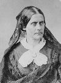

1920 yılında kongre kadınlara oy hakkını tanıdığı zaman yasayı destekleyenler ona “Anthony Değişimi” adını verdiler. Yasaya adını veren Susan B. Anthony (1820–1906) kadınlara oy hakkı verilmesi hareketinin önemli liderlerinden biriydi. Hayatını adadığı amacın gerçekleşmesinden sadece birkaç yıl önce öldü.

Anthony, Massachusetts’teki Adams’ta doğdu. Katı bir Quaker ailesinde yetişti. Oyun oynaması yasaktı. Philedelphia’da eğitim gördü. Bir dönem öğretmenlik yaptı. New York’taki muhtelif kasabalarda çalıştı. Öğretmenlik o dönemde kadınların yapabileceği nadir işlerden biriydi. Anthony ilerici fikirlerini henüz gençken ebevenylerinden almıştı. Erken yaşlarda kölelik karşıtı hareketin gönüllüsü oldu. Alkolün yasaklanması için bir kampanyaya öncülük etti. Bunu kadınları sarhoş eşlerinden koruyabilecek bir reform girişimi olarak görüyordu. Sendikalara destek verdi.
Onun esas ilgisini çekense kadınların oy hakkı için verilen mücadele oldu. 1851 yılında hareketin ilk liderlerinden Elizabeth Cady Stanton (1815–1902) ile tanıştı. Stanton, Anthony’nin harekete dahil olmasında önemli rol oynadı. Nitelikli bir konuşmacı olan Anthony, kısa sürede ülke çapında kadın oy hakkı hareketinin en tanınan aktivistlerinden biri olacaktı.
İç Savaş sırasında Anthony ve Stanton coşkulu Birlik yanlılarıydılar. Ancak savaş sonrasında Kongre siyahlara oy hakkı verirken kadınları unutunca hayal kırıklığına uğradılar. 15. Anayasa Değişikliği oy hakkı hareketini ikiye böldü. Kimileri bunu eşitlik yönünde atılan önemli bir adım olarak değerlendirirken Anthony gibiler herkes için gerçek eşit oy hakkında ısrarcı oldular. Fakat değişiklik ilk haliyle 1870 yılında onaylandı.
Anthony, 1872 yılındaki başkanlık seçiminde yasalara karşı gelerek oy kullanınca ismini yeniden duyurdu. Federal polis tarafından tutuklandı ve 1873 yılında yargılandı. Ancak yargılama süreci kadınların oy hakkını yeniden gündeme getirmişti.
Anthony, 1892 yılında Ulusal Kadın Oy Hakkı Derneği’nin lideri oldu. Bu grubu yirmi yıl önce Stanton ile birlikte kurmuştu. 1900 yılında görevi bıraktı. 1906’da ölümünden birkaç ay önce Baltimore’da çok önemli bir konuşma yaptı. Şöyle diyordu: “Kısa bir süre için daha burdayım. Sonra benim yerim doldurulacaktır. Mücadele durmamalı. Devam etmesini sağlamalısınız. Yenilgi imkansızdır.” On dört yıl sonra onun adını taşıyan tasarı yasalaştı.
Ek Bilgiler
1- Anthony okuma ve yazmayı üç yaşında öğrenmişti.
2- 1900 yılında, doğduğu şehirdeki Rochester Üniversitesi’ni kadınları da öğrenci olarak kabul etmek konusunda ikna etti. Pek çok özel Amerikan üniversitesi karma eğitime ancak on yıllar sonra geçecekti.
3- 1873’teki yasadışı oy kullanma girişiminden sonra yargılanınca 100 dolar ödemeye mahkum edildi. Ancak bu parayı asla ödemedi.